开发笔记与总结
电梯调度
第1阶段：接口定义
设计一组可用于电梯调度的接口和类定义。主要考虑：
- 简单
- 如何提供足够的信息给调度器，以便于能顺利完成调度？
- 实际驱动电梯的组件是什么？
- 对何规定乘客的行为？例如当乘客需要从3层到20层时，但是当前电梯不能直达，乘客应如何行动？
一、项目分析
电梯调度问题本质上是乘客发出信号和电梯接收信号然后进行调度的问题。简单来说，乘客按下按钮发出请求信号，多部电梯接收到该信号并将乘客载到目标楼层。每一部电梯是一个线程，每一个乘客也是一个线程，而项目的关键在于多部电梯如何处理请求信号、由哪部电梯接乘客、以及各电梯如何协作运行才能使得乘客到达目标楼层花费的时间尽量短，同时还要保证电梯的吞吐量。也就是说，系统应保证所有乘客整体花费的时间最短，效率最高，避免死锁和乘客长期等待的情况。对于一些特殊情况，如当前电梯不能直达，需要转乘其他电梯时，系统还应该给乘客提供合理的乘坐路线。
二、类和接口的定义
1.电梯类定义
电梯类中应包含电梯的基本属性，如电梯的速度、开关门时间、服务楼层，乘客人数限制、最大载重量等，也应包含电梯在调度的过程中，每一时刻对应的状态，如当前的载重量、当前的人数、当前的状态（共分为0-开门中，1-已开门，2-关门，3-移动中四种状态）、爬升/降落。在电梯类的构造函数中，定义每个电梯的初始状态为关门，起始楼层为1层，将项目要求中所说的电梯服务楼层、最大载重量等按照电梯的序号分别赋值。
1 | //电梯类 |
2.乘客类定义
乘客类中应包含的属性为乘客的体重、当前的楼层、目标楼层等。此处我们添加了一个乘客状态属性，是为了在后续的算法中，便于管理乘客的行为（可见后续调度状态中的介绍）。在乘客的构造函数中，除了给乘客的基本属性赋值以外，我们添加了一个对当前楼层和目标楼层的判定从而对dire（方向）进行赋值的过程，此步骤是为了后续更方便进行调度。
1 | //乘客类 |
三、UML活动图
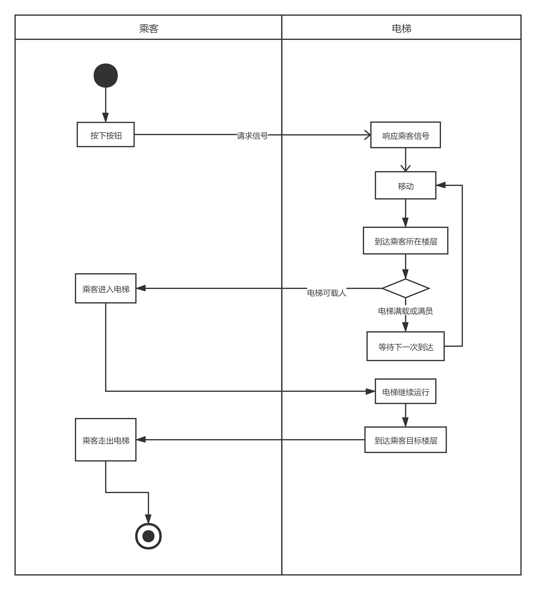四、调度状态
1.电梯状态
电梯一共分为四种状态，分别为开门动作、电梯敞开、电梯关门、电梯移动，四种状态下电梯分别会等待一定的时间以及输出一定的动作语句，同时也会改变电梯的当前楼层等属性值。
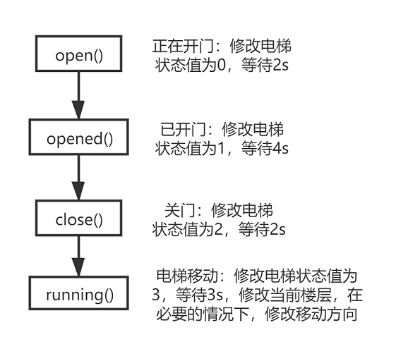2.乘客状态
乘客的状态分为等待、乘梯、到达三种状态。但是在项目中，我们不能简单地认为乘客乘坐了某一电梯之后就会立即到达目标楼层，需要注意的是，每个电梯的服务楼层并不相同，可能乘客乘坐了无法到达目标楼层的电梯，因此这里我们规定：乘客所到达的该电梯的最顶层或最底层或中断层（4号电梯）并不是目标楼层时，乘客需在此处下梯，重新进入等待状态，等待下一班电梯的到来。
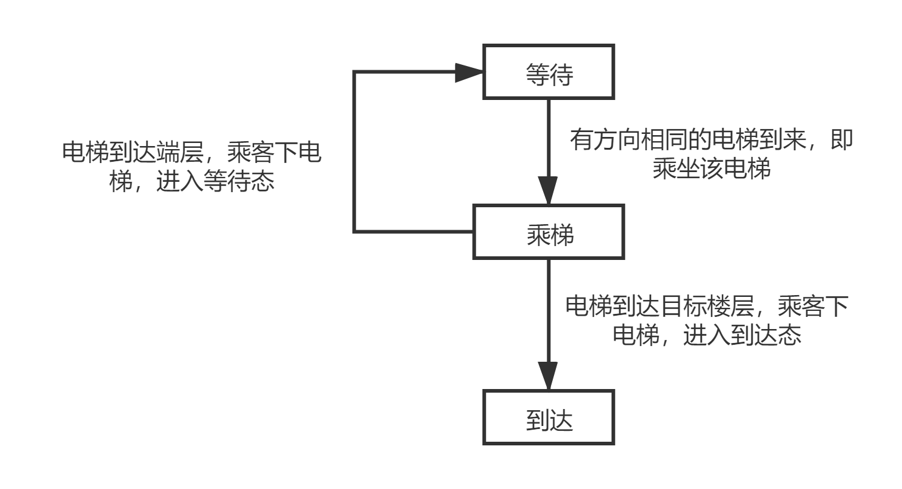第2阶段：实现一个基准调度算法
模仿公交车的调度算法，实现一个“BUS”算法，这大概是用于电梯调度中性能最差的一个算法，也就是说你下一阶段实现的算法的性能至少应高于这个算法。
算法的思想是：将电梯当作公交车，从-1层一直到最高层（20层），每一层都停，并且开门，让乘客进出，然后关门，继续向上走。直到最高层，再向下。
一、算法分析
公交车算法的思想如题目中所说，是将电梯当做公交车，从-1层一直到最高层，每层都停且开门。在第一阶段接口定义的基础上，我们有了电梯和乘客类的定义，而本阶段需要对乘客和电梯的具体行为进行具体定义，再利用公交车算法，对电梯行为的具体调度进行定义。除此之外，在这个项目中，四部电梯是各自并行的，若干个乘客也是并行运行的，不能简单地使用循环让一个一个实现他们，所以我们也需要使用多线程来并行实现这些行为。
因此，在本阶段中，我们主要的任务是对乘客行为类、电梯行为函数、公交车类和主函数进行定义，实现上述分析的需求。
二、算法实现
1.乘客行为类的定义
按照我们之前对乘客行为的定义，对于乘客类而言，一共有三种状态，分别是等待、乘梯和到达。不过在实际的乘客与电梯的交互中，我们只用到了等待和到达两种状态来判定乘客接下来的行为。创建乘客类线程后乘客便进入等待态，当电梯运行到自己的当前楼层时，判断电梯的运行方向是否和目标楼层方向一致、以及电梯是否满载满员，若满足条件则进入电梯，否则继续等待下一部电梯到来并满足条件进入电梯。进入电梯后，不断获取电梯的当前楼层属性，当电梯运行至目标楼层时，乘客走出电梯，状态变为到达态，并自动销毁线程。如果乘客线程在电梯的服务端点层被赶出电梯，则状态依旧是等待态，但要更新乘客的当前楼层和目的楼层方向。
在乘客行为类中，我们传入一个乘客信息和四部电梯信息，实现Runnable接口：
1 | //乘客行为类： |
run函数的算法流程图如下所示：
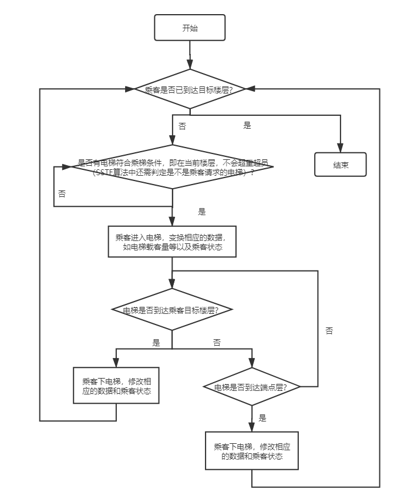2.电梯行为类的定义&公交车算法
对于电梯线程而言，每部电梯使用running函数实现电梯的来回移动，在该电梯的每个服务楼层都停靠，并执行开门、敞开和关闭动作，期间更新自己的属性（当前楼层、运行方向、状态、当前载重量和当前载员数等）。当电梯运行至服务楼层的端点层时，将电梯中的所有乘客都赶出电梯，当前载重量和载人数归零，随后电梯继续来回运行。
阶段1中我们曾分析过电梯类中应含有的四个动作，在本阶段中，我们实现阶段1的这四个动作，如下是补充电梯类中的四个动作函数
1 | //开门动作 |
完成了对电梯类中的动作实现之后，我们就可以开始着手实现公交车算法了，这里我们定义一个公交车算法类，传入这个类的是电梯对象，由这个类实现电梯的调度顺序
我们实现的BUS算法的流程图如下所示：
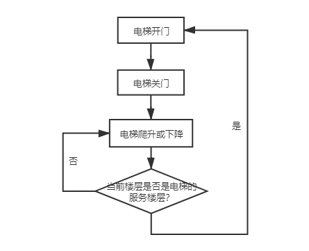
3.主函数的实现——多线程调用类（薛佳伟）
在我和室友分别完成乘客行为类和电梯行为的定义之后，就可以开始实现主函数对这些类的调用了。主函数除了需要创建四个电梯对象以及随机若干个乘客对象之外，还需在这四个电梯对象和若干个乘客对象的基础上创建四个公交车对象和若干个乘客行为对象。在创建每一个对象的同时，分别new一个Thread，并将对象传入这个线程对象中，并调度这一线程开始运行。
1 | public class Main { |
三、程序使用说明
程序可以自定义乘客的数量psg_num，乘客的属性都是随机的，然后点击运行。输出窗口中，可以看到每个电梯的状态变化（开门、敞开、关门、层间移动）；乘客后的括号中的两个数字分别是乘客的初始楼层和目标楼层；乘客进出电梯时，会输出乘客的序列、电梯的序号、以及楼层。程序默认无时间限制，可以手动点击停止按钮结束程序。
（下图为运行过程截图，手动停止）
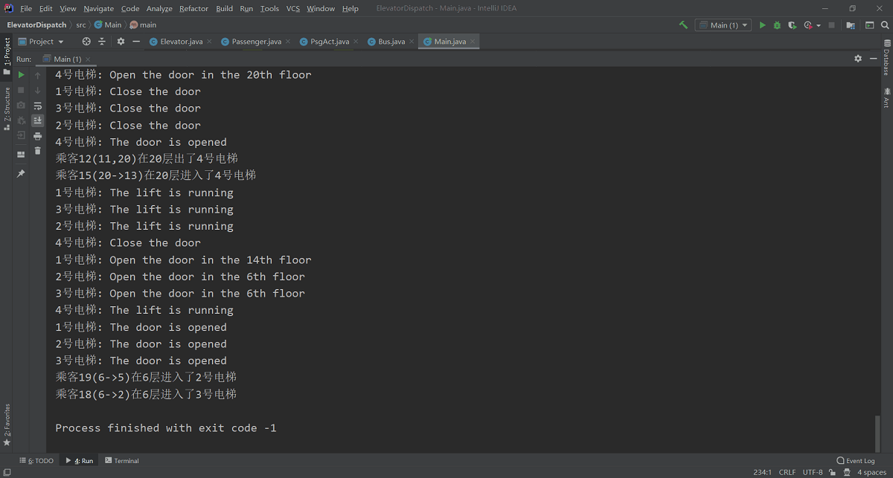四、程序测试
我们一共测试了5次数据，每组随机二十位乘客，查看程序是否发生死锁或乘客等待过长，以及确认每一个乘客是否到达了目标楼层。在测试阶段，我将程序的其他输出取消，只在乘客到达目的楼层出电梯的时候，输出其目标楼层和当前楼层，查看是否一致。（手动停止程序）
测试1：
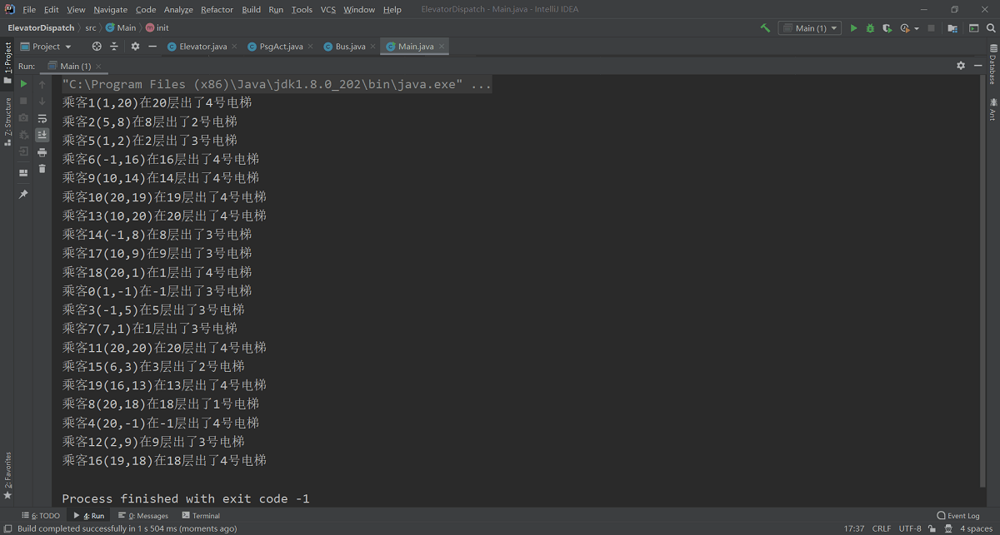测试2：
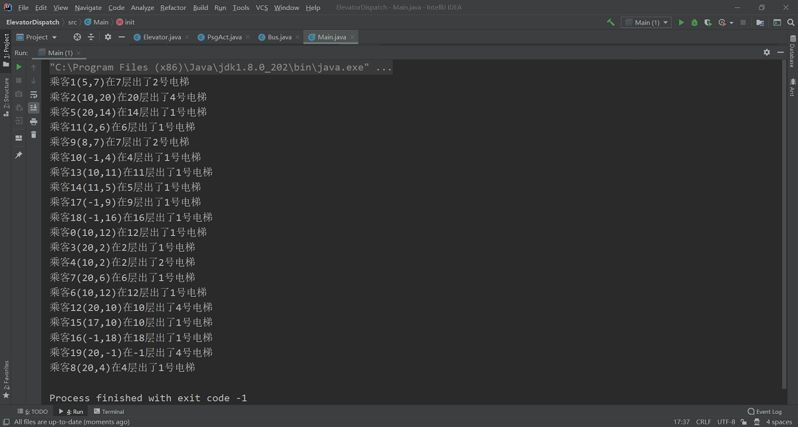测试3：
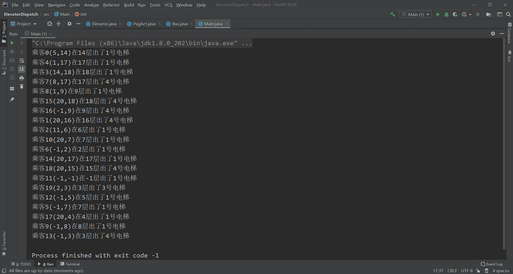测试4：
测试5：
测试结果分析：经过5组数据的测试，我们可以看出，每一次测试中乘客到达目标楼层的正确率都是百分之百的，所以此阶段任务顺利完成。
第3阶段：实现你的算法
了解电梯调度算法，自行理解算法的思想，尝试实现其中2种算法，并进行性能的比较。
一、算法分析
1.SSTF算法
最短寻找楼层时间优先(SSTF)与和我们在操作系统原理中磁盘寻道部分的最短距离优先算法一样，所以这里我们是参照了最短距离优先算法来设计的这一算法。最短寻找楼层时间优先算法选择下一个服务对象的原则是最短寻找楼层的时间，请求队列中距当前能够最先到达的楼层的请求信号就是下一个服务对象。所以在这里我们在电梯类中添加了一个请求列表，当有乘客在等电梯时，会根据当前楼层和目标楼层请求一个电梯，将相关信息加入这个电梯的等待队列中，而后由电梯的SSTF算法根据该电梯的请求队列决定下一个停的楼层。
2.LOOK算法
LOOK 算法是扫描算法（SCAN）的一种改进。对LOOK算法而言，电梯同样在最底层和最顶层之间运行。但当 LOOK 算法发现电梯所移动的方向上不再有请求时立即改变运行方向，而扫描算法则需要移动到最底层或者最顶层时才改变运行方向。当电梯内有人时，电梯势必在运行方向上还有要去的楼层，此时不必判定；在电梯门关闭时，如果此时电梯中没有乘客，则进行判定，查看电梯的两个方向上是否还有请求，以此来判断电梯应该掉头、继续运行或者停止。
二、算法实现
1.SSTF算法类的定义
与公交车算法类似，SSTF算法的电梯类也是循环执行open()、opened()、close()、running()这几个函数，只是running()函数的执行时间和执行次数需要根据SSTF的性质做出调整。每一次的电梯状态变换循环中，在电梯关门后，会有一次下一步应到楼层的判定，向上和向下两个方向比较更近的应停楼层，而后根据这一判定结果调用running()函数，直到到达目标楼层。
我们实现的SSTF算法可如下图所示：
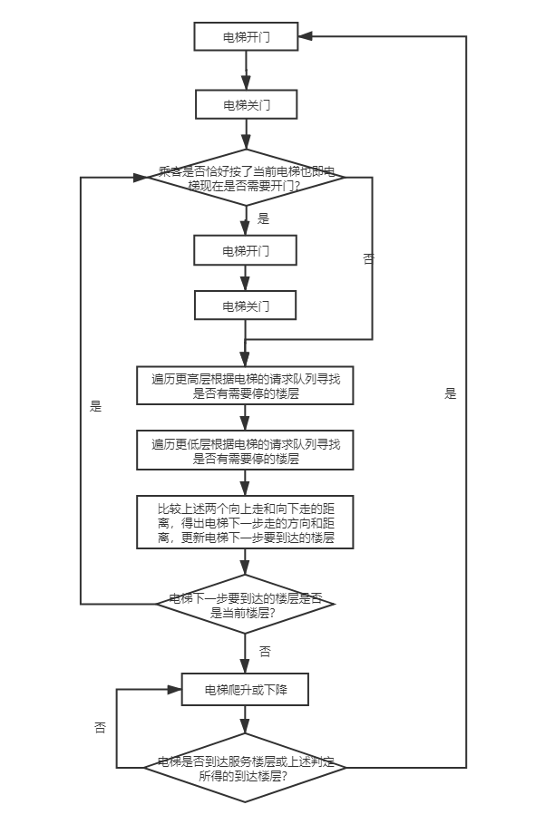2.LOOK算法类的定义
和Bus算法主体类似，还是电梯的四个状态open、opened、close、running循环执行。不过在LOOK算法中，每次close动作执行完，会有一个while循环持续判定，如果电梯中有乘客，则直接跳出循环；如果电梯中没有乘客，就看电梯的上下两个方向上是否有请求，如果某个方向都没有请求，则电梯改变当前运行方向并跳出循环，否则电梯静止；此外还需要注意特殊情况，即本层有反向请求且不为端点层的情况，此时需要先改变方向然后执行开门关门动作，之后跳出循环。
算法流程可如下图所示：
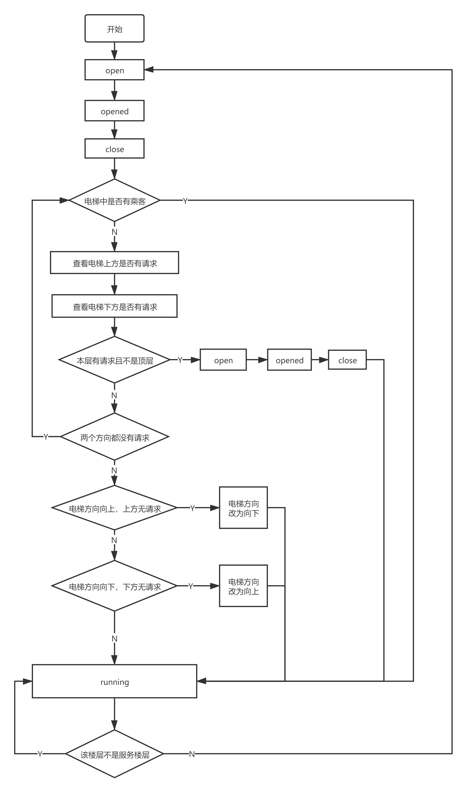3.乘客行为类和主函数的修改
为了兼容BUS、LOOK、SSTF多个算法，对乘客行为类PsgAct、电梯类Elevator、主函数Main进行一些修改。在乘客行为类PsgAct中，乘客等电梯的过程需要分为两种情况，如果是BUS或者LOOK算法，那么乘客需要不停地遍历五部电梯，查看有没有电梯到达本楼层，且电梯门打开、不超重不超员、运行方向与乘客目标方向相同，如果符合条件则进入电梯并更新电梯的乘客数和载重量、以及floor数组。如果是SSTF算法，那么乘客只需要等待自己的那部电梯到达本楼层、不超重不超员、电梯门打开，而且不必方向不同，符合条件的话则进入电梯，更新电梯的乘客数和载重量、以及stop_floor数组；而如果电梯超载的话，乘客不会上电梯，而是重新请求一部其他电梯，继续等待。
在电梯类Elevator中，主要增加了几个变量和一个锁。首先定义了stop_floor数组，用于表示SSTF中电梯需要停的楼层；定义了变量next_stop_floor，表示SSTF算法电梯接下来的目标楼层；定义了一个变量scheduling_algorithm，表示电梯使用的算法，用于让乘客选择上电梯方式；还设置了一个锁，用于限制乘客有次序地查看电梯状态和上下电梯。
在主函数Main中，用变量scheduling_algorithm来区分不同的算法，从而执行不同的初始操作。三种算法的主干是类似的，都是先定义四个采用不同算法的电梯对象并执行相应的线程，然后定义多个乘客对象并执行线程。在LOOK算法中，创建乘客线程前，要先更新floor数组；在SSTF算法中，创建乘客线程前，要先遍历所有电梯，找到距离乘客最近的电梯，并分配给它，然后更新stop_floor数组和乘客的电梯编号。除此之外，Main类中，还创建了一个类renewpag用于gui中更新乘客的状态。
三、程序测试
1.SSTF算法程序测试
在队友的SSTF算法实现后，我对它展开了测试，一共随机了5组每组20位乘客，测试程序是否会发生死锁或者其他卡死情况，并观察乘客最后是否能够到达目标楼层。测试过程截图如下所示：
测试1：
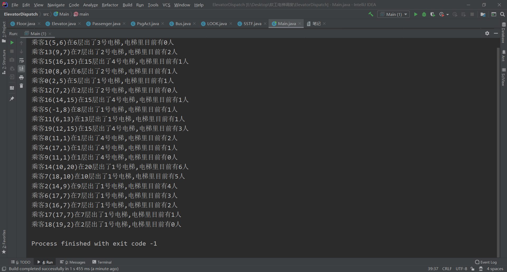测试2：
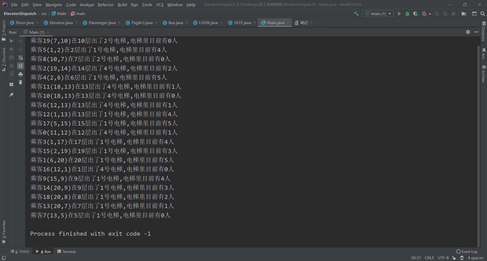测试3：
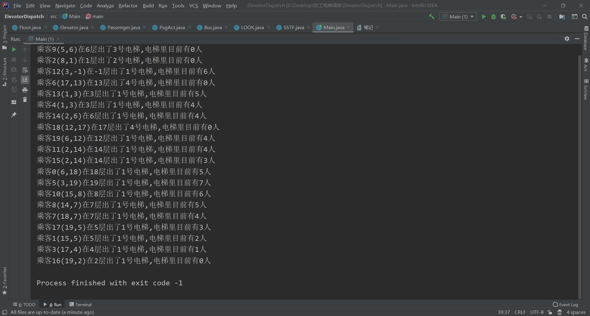测试4：
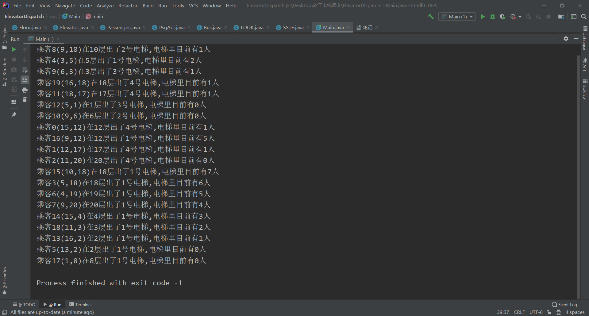测试5：
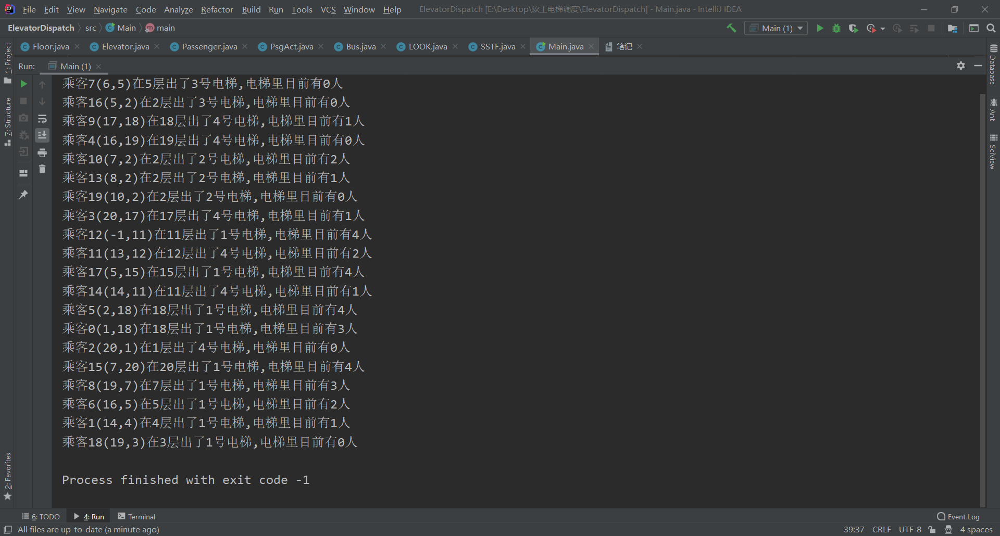 一共进行了5次测试。每一个测试中都成功将所有乘客送到目标楼层，五次测试分别耗时5分02秒，4分14秒，4分51秒，4分23秒，4分56秒，平均耗时4分41秒。
2.LOOK算法程序测试
在LOOK算法实现后，我一共测试了5组数据，每组和BUS算法测试时相同，是随机20位乘客，查看程序是否会发生死锁，确认每个乘客是否能到达目标楼层。由于我们的设置中，电梯程序不会停止，所以最后是手动停止程序。测试过程截图如下所示：
测试1：
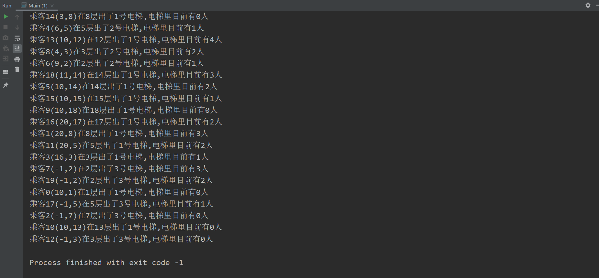测试2：
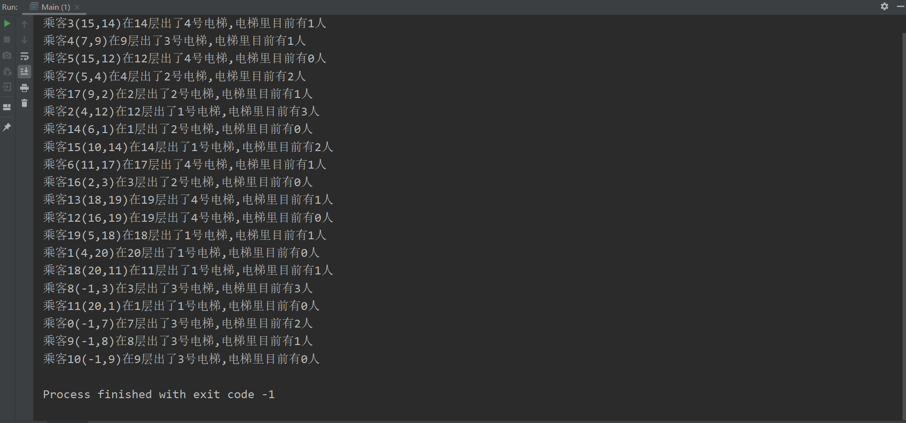测试3：
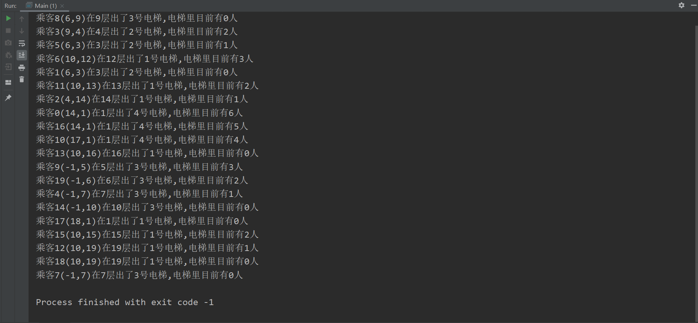测试4：
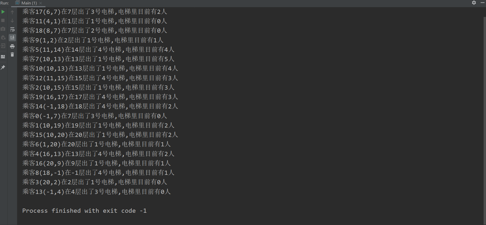测试5：
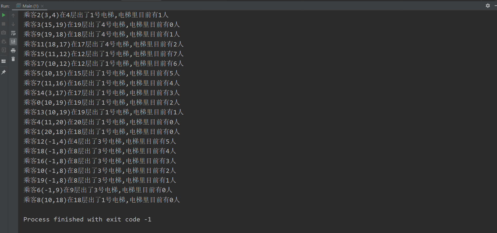在上述的5次测试中，每一次的测试中乘客均能够到达目标楼层，没有出现无法上电梯或无法到达的情况，此阶段任务顺利结束。
第4阶段：测试及展示
目前的这个测试程序只有命令行界面, 请给它设计UI界面, 显示乘客/电梯的运动, 并实现。
使用相同的大厦+电梯参数，同样的乘客模拟数据，可以同时运行两个调度界面，分别加载一个调度算法，显示乘客+电梯在系统中的运行情况，并且有专门的状态显示（时间，载客人数，KPI等）。
模拟运行完之后，可以直观看到哪个调度算法是快速的。
一、阶段任务分析
该阶段的任务是设计UI，应该直接形象地显示出各电梯当前所在的楼层及运行方向、各电梯中的乘客数量、正在等待的乘客数量、已经到达目标楼层下了电梯的乘客数量。
二、界面实现
1.界面设计
界面是以上帝视角看整个电梯的运行的，实时显示四个电梯的运行状态，包括运载人数、当前楼层和运行方向，显示当前不同状态乘客的数量，有多少位乘客在等待电梯，多少位乘客正在电梯中，有多少位乘客已到达目标楼层，以及显示当前时间。
界面设计构想如下图所示：
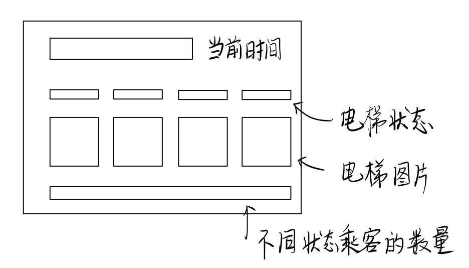2.界面实现和初始化
在界面类的构造函数中，调用一个初始化函数init()。在init()函数中调用函数向界面添加当前时间，显示电梯的初始状态和加载电梯图片，显示乘客的初始状态，并设置这些显示控件的位置和字体、大小等。
界面的初始化状态如下图所示：
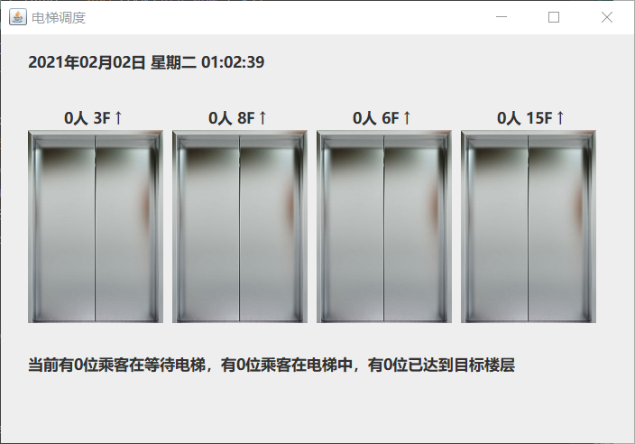3.界面数据传输与刷新
在界面中，电梯的状态与不同状态乘客的数量是一直在变化的，所以需要不停地刷新并显示新的数据。在这里，我们在定义电梯类的时候，加入了四个电梯对象属性和不同状态的乘客数目的属性。在new一个界面对象的时候，就需要将四个电梯对象传入界面对象中，在界面类的构造函数中将这四个电梯对象传至对象的属性里。而不同状态的乘客数则是将这一界面对象传入了乘客行为类对象中，每当有乘客状态发生变化时，会在加锁的前提下改变界面对象中的相应的乘客数值。
在界面类中，我们定义了一个电梯状态更新函数，该函数可以根据传来的电梯序号，更新对应的电梯状态。除此之外，我们还定义了一个乘客数目更新函数，该函数负责更新不同数目的乘客数的显示。界面的刷新是由电梯调度对象和新建的一个乘客数刷新对象实现的：在主函数中，我们会将界面对象传至这几个对象中。电梯调度函数中，每当电梯达到一个新的楼层并开门后，程序就会调用界面对象的电梯状态更新函数，刷新当下的电梯状态；在乘客数刷新对象中，每隔2秒，调用一次更新函数，刷新当下的不同状态的乘客数目。
各模块之间传输数据的示意图如下所示：
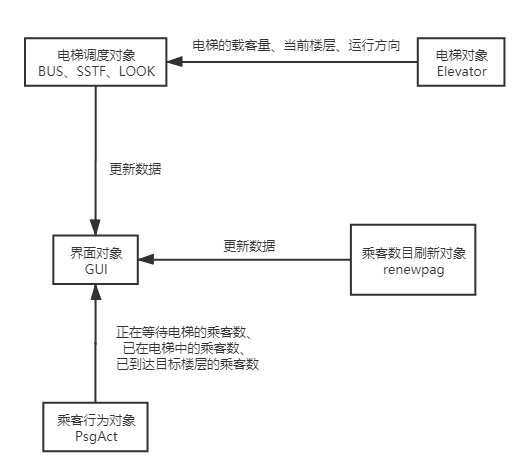电梯状态数据在模块之间的传输遵从了MVC模式的设计思想，电梯对象Elevator作为数据源向控制器电梯调度对象传输数据，而后控制器向界面发送更新数据。
三、程序测试
在队友将界面实现好以后，我分别用BUS、SSTF、LOOK算法对界面运行进行了测试，都能够正常运行并与实际输出的电梯状态和乘客数量保持一致，测试过程截图如下所示：
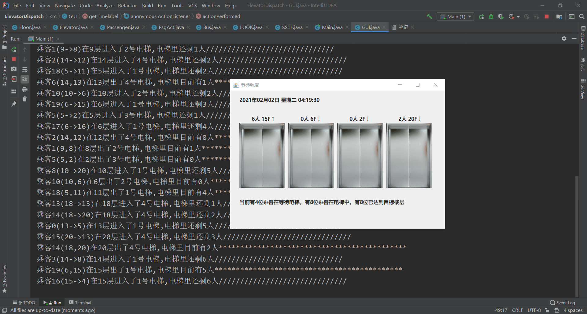四、程序使用说明
打开工程文件后，进入[Main.java]程序main函数部分，调整scheduling_algorithm值可以更换电梯采用的算法，调整psg_num值可以改变乘客的数量。设置好参数后，便可运行Main程序，通过UI界面，可以实时看到电梯的人数、楼层和运行方向以及当前处于各个状态的乘客数量。如下图所示：
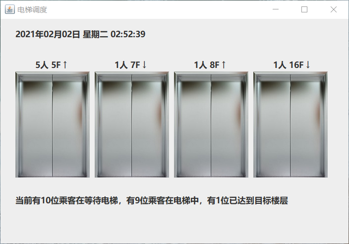五、对比实验
为了实验的严谨性，我一共测试了三组数据，同一组LOOK算法和SSTF算法的对比中，乘客的数据是不变的。
第一组：前两张是LOOK算法，耗时13分09秒；后两张是SSTF算法，耗时5分36秒。
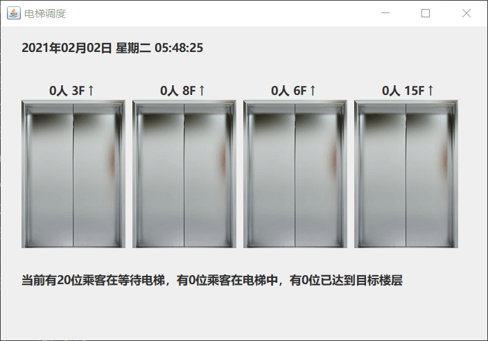第二组：前两张是LOOK算法，耗时12分17秒；后两张是SSTF算法，耗时3分56秒。
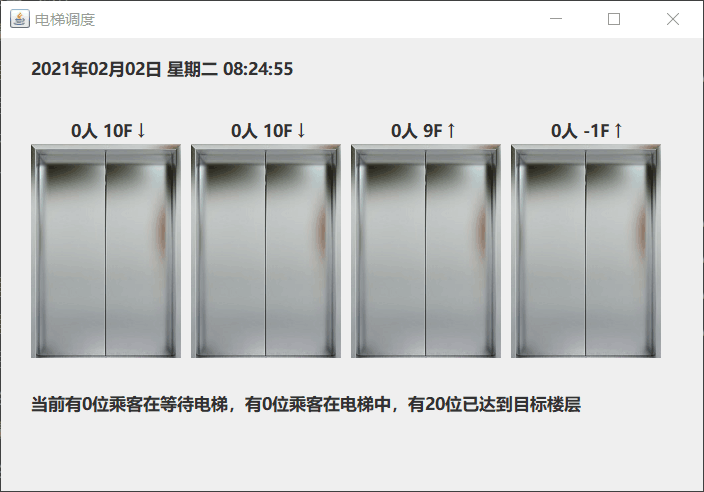 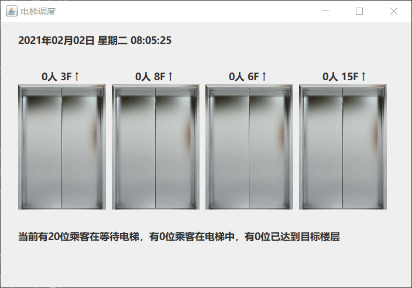 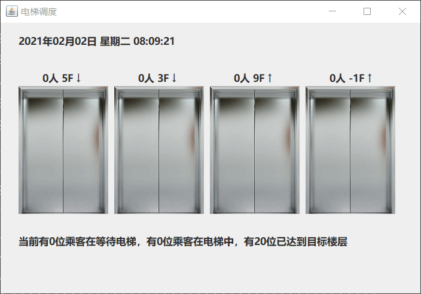第三组：前两张是LOOK算法，耗时7分14秒；后两张是SSTF算法，耗时3分38秒。
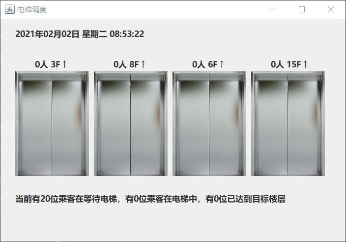 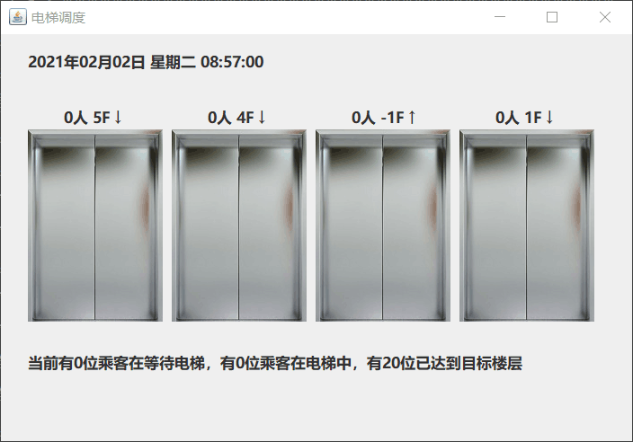综合三组数据，LOOK算法平均耗时10分53秒，SSTF算法平均耗时4分23秒。显然，SSTF算法要比LOOK算法快得多。
总结
一、时间估计与记录
| PSP2.1 | Personal Software Process Stages | 预估耗时（分钟） | 实际耗时（分钟） |
| Planning | 计划 | 60 | 90 |
| · Estimate | · 估计这个任务需要多少时间 | 30 | 30 |
| Development | 开发 | 120 | 100 |
| · Analysis | · 需求分析 (包括学习新技术) | 400 | 480 |
| · Design Spec | · 生成设计文档 | 120 | 150 |
| · Design Review | · 设计复审 (和同事审核设计文档) | 60 | 30 |
| · Coding Standard | · 代码规范 (为目前的开发制定合适的规范) | 60 | 40 |
| · Design | · 具体设计 | 120 | 100 |
| · Coding | · 具体编码 | 1000 | 800 |
| · Code Review | · 代码复审 | 360 | 200 |
| · Test | · 测试（自我测试，修改代码，提交修改） | 400 | 800 |
| Reporting | 报告 | 240 | 300 |
| · Test Report | · 测试报告 | 60 | 40 |
| · Size Measurement | · 计算工作量 | 30 | 30 |
| · Postmortem & Process Improvement Plan | · 事后总结, 并提出过程改进计划 | 60 | 100 |
| 合计 | 3120 | 3290 |
本次开发过程时间估计与实际所花的时间差异并不是很大，但是其中部分项目的估计与实际差异还是比较大，特别是具体编码和测试这两个，我们本来估计的是第二和第三阶段“高强度”开发三到四天，主要解决代码问题，但是实际上把接口等都规划好后，实际写代码花的时间并没有那么久。但是到了测试过程的时候，我们发现问题比较大。虽然在博客中我们给出的都是比较成功的测试案例，这些也确实都是最后修改好了之后的最终测试，但是之前的每一遍测试都给我们俩留下了巨大的心理阴影，特别是多线程部分，因为这是我们第一次真正上手多线程编程，很多诸如锁那样的机制我们还不懂，所以在测试过程中，线程卡死我们都不知道为什么，后来在不断的学习过程中，我们渐入佳境，将这些问题逐个击破，最终形成了这份程序。
二、结对过程描述与反思
在这一段时间的开发过程中，我们对结对编程的方式也有了一些体会：
结对编程的优点
在开发层次，结对编程能提供更好的设计质量和代码质量，避免一些不必要的错误，提高效率，省下很多修改、测试的时间，两人合作能有更强的解决问题的能力。
在结对编程中，因为有随时的复审和交流，程序各方面的质量取决于一对程序员中各方面水平较高的那一位。
对开发人员自身来说，结对工作能带来更多的信心，高质量的产出能带来更高的满足感。
在心理上, 当有另一个人在你身边和你紧密配合, 做同样一件事情的时候, 你不好意思开小差, 也不好意思糊弄。
总之，如果运用得当，结对编程能得到更高的投入产出比。
结对编程的缺点
结对编程可能会使简单的任务复杂化。
结对编程可能会让成员承担过多的责任，有时甚至过度负责。
如果结对两人关系不和或不适合结对编程，反而会影响编程的效率和正确性。
三、其它收获
此次实验在此算法告了一个段落，回顾在学校的4天以及在家的5天开发历程，这三千多分钟的努力是值得的，我们从刚开始的摸不着头脑，甚至连git的基本操作也不会，到现在居然真的完成了这个项目。选题的时候，我们都以为电梯调度相比来说应该会简单一些，但是真正上手实践的时候，我们遇到了很多未曾设想的问题，在开发之前，我们甚至不知道java的类之间的对象传递操作，更不用说多线程了。
在这接近十天的开发过程中，如前面所说的，我们确实遇到了很多问题。起初我们将乘客放入了一个队列，让电梯来操纵乘客的行为，但是转念想这与事实不符，在后续的实现过程中也很更加麻烦，结合四部电梯需要分别执行，我们想到了用多线程的机制来解决，所以这一次在开发过程中我们较大的一个攻克点就是多线程的学习与实践了，在不断的学习和我们两位同学的讨论中，最后我们成功地运用了多线程的方法解决电梯调度的问题和乘客状态变更的问题。
除了多线程以外，还有加锁、java界面设计也是我们不太熟悉的领域，对于这些问题，我们也是一步一学习，一步一攻关，在开发的过程中，我们学习到了多种锁的用法，也学习到了java界面设计中的很多函数和方法。这些对于我们来说也是十分宝贵的财富。
总结这一次的开发，我们不是向以前那样，拿起题目就开始盲目地写程序，而是在每一次动键盘写代码之前，先讨论，画图，设计各种类与方法以及建立他们之间的联系，思考应该加入的函数和他们的功能，再根据我们所讨论的结果，编写代码。每次写完一部分代码，我们也是相互交换着对对方所写好的代码进行测试，发现问题并再次进行讨论和修改。
除此之外，边写代码边写博客的形式也给我们带来了全新的体验，在编写代码的同时，编写博客对这一阶段的程序进行总结，不仅让我们对自己所实现的算法等有了更深的体会，也锻炼了我们编写文档、部署博客的能力。所以我们一致认为，这一次的开发对我们来说是一次十分宝贵的经历，让我们在收获知识，锻炼编码能力的同时，也使得我们对完整的软件开发过程有了初步的认识，对课堂中学到的软件开发的知识有了更深的体会。